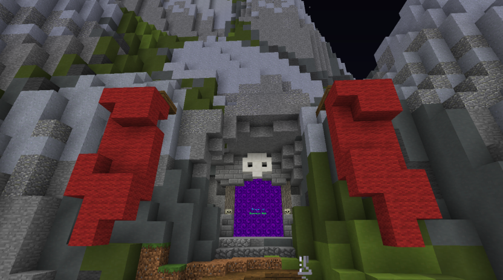

About This Site
By Shray K.
please subscribe!
Why did I make this site about this?
I made this site about Skyblcok, and specifically Dungeons inside of Skyblock because Dungeons have been one of the most fun learning curves I've ever experienced in a game, and with a bit of dedication, math, and skill, I've been having a LOT of fun playing, and made a lot of profits in-game!
Overall, I just wantted to share this specifically because:
- I need to share/do something
- I can share what I want to share (as long as it is appropriate)
which just made it an awesome oppertunity to share out something that I am passionate about!
(also I have NOTHING else interesting in my life ;-;)
jk
ANYWAY.
What is this site about?
This site is about a game called Skyblock inside of a server called Hypixel in Minecraft.
This site is focusing on an area of Skyblock called Dungeons!
The enterence is located in a cave to the side of the hub:

Through the portal, you enter the dungeon hub!
inside of there, you can do a few side quests, but mainly enter dungeons! (which is the whole of what I will be covering!)